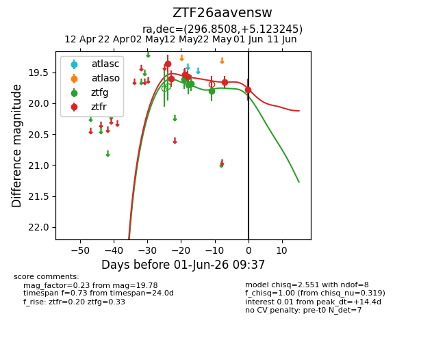
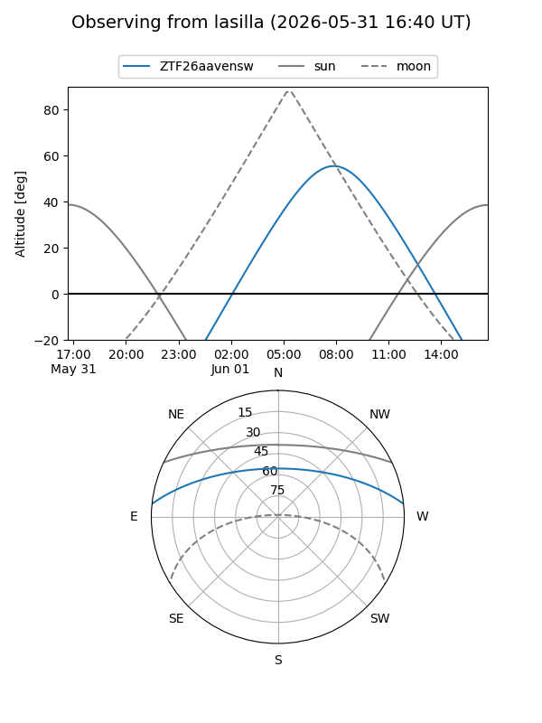
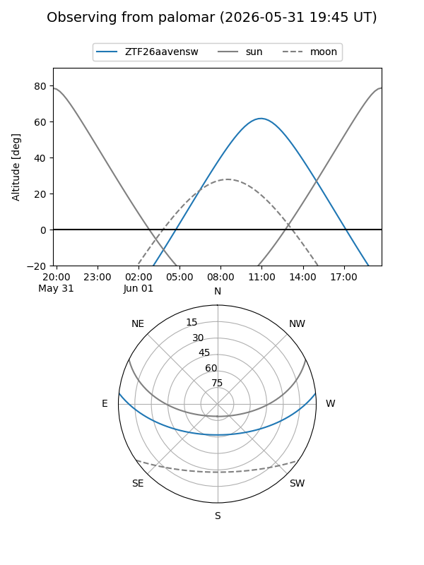
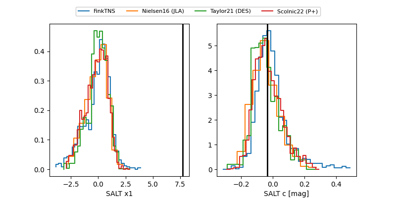

ZTF26aavensw
Target ZTF26aavensw at 2026-06-01 09:38
Aliases and brokers:
lsst-FINK: link
lsst-Lasair: link
lsst-ALeRCE: link
ztf-FINK: link
ztf-Lasair: link
ztf-ALeRCE: link
alt names
ZTF26aavensw (ztf,fink_ztf)
Coordinates:
equatorial (ra, dec) = 296.8508,+5.12324
equatorial (HMS+DMS) = 19:47:24.19,+05:07:23.68
galactic (l, b) = (44.0130,-9.99709)
Flags:
Photometry:
last ztfg=19.80, ztfr=19.78
4 ztfg, 6 ztfr detections
Lightcurve

Visibility


Additional plots
